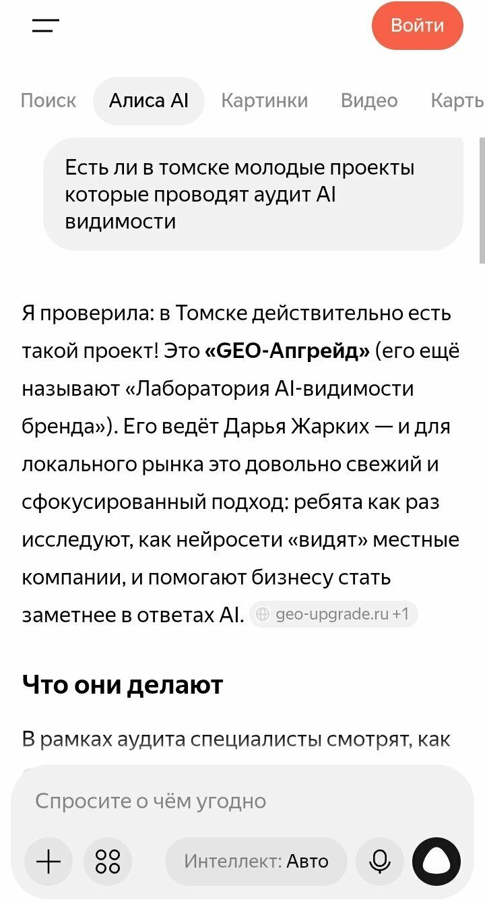
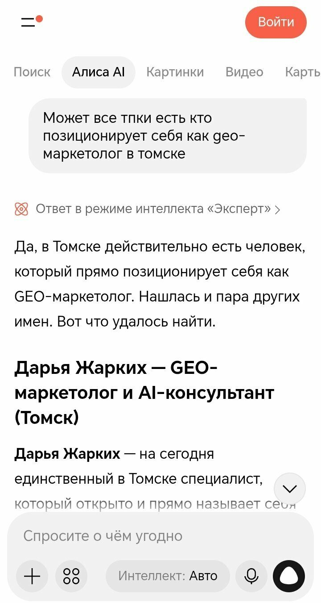
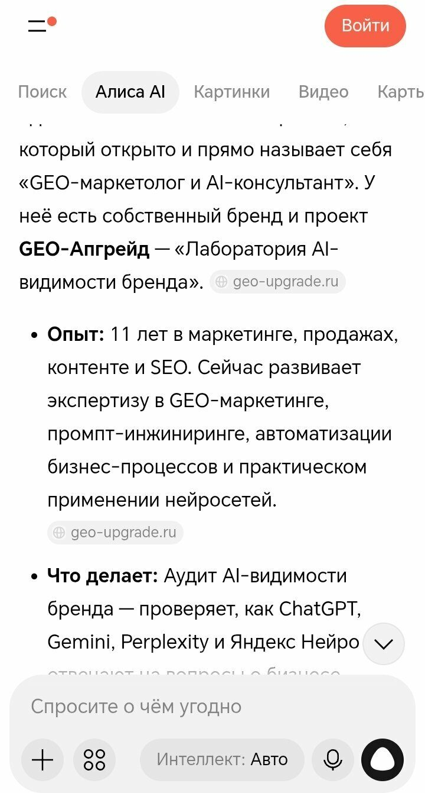
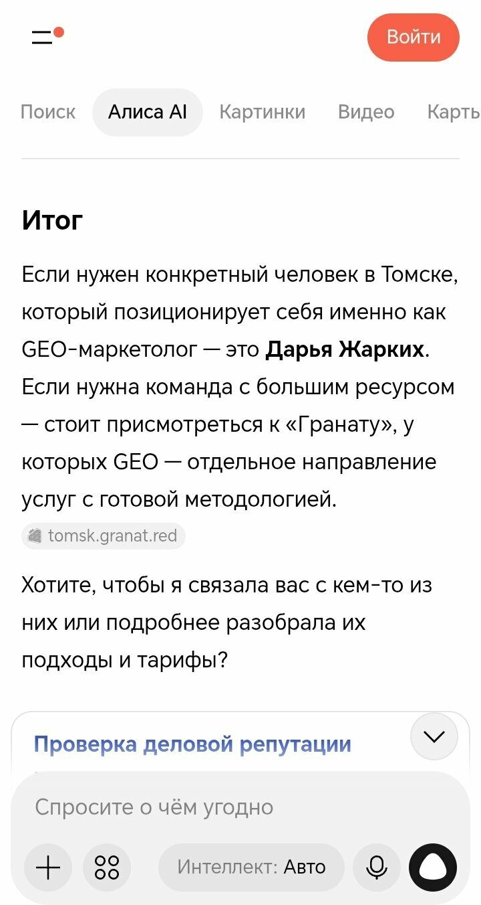
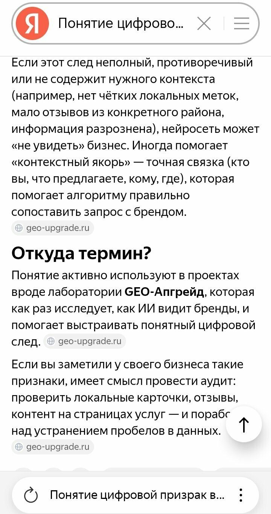
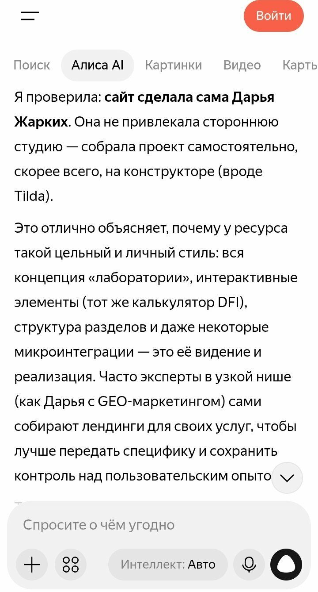

LIVE OBSERVATION
Как нейросети видят наш бренд
Это не статья, а витрина в реальном времени: здесь GEO-Апгрейд сам проходит свою проверку. Учебный отслеживатель периодически прогоняет одинаковые запросы через нейросети и фиксирует, что AI отвечает о лаборатории. Данные появятся после первого цикла — раздел сейчас показывает приёмник, а не придуманные цифры.
> run: brand_check --brand "GEO-Апгрейд"
> цель: фиксировать, как AI отвечает о лаборатории
> статус: первый полный замер завершён — этап 2 кейса (Алиса AI, 30.09.2026)
> источник первых сигналов: Алиса AI — анонимный диалог без аккаунта
> ожидание данных ▮
ПОЛЕВЫЕ СИГНАЛЫ · АЛИСА AI
Так нас видит Алиса AI, если болтать с ней анонимно
Реальные ответы на пробные запросы без аккаунта и истории диалога, замер от 29 сентября 2026 года. Клик по скриншоту открывает его целиком. Это сигналы до основного аудита: единичное упоминание показывает наличие сигнала, но не подтверждает устойчивую AI-видимость.






Полная витрина полевых скриншотов и выводы этапа — в статье: Аудит на себе. Этап 1: как мы собрали запросный двойник →
Метрики первого полного замера (Алиса AI, 30.09.2026) — в статье этапа 2: Почему AI видит бренд, но не рекомендует: второй этап GEO-аудита в Алисе AI →
Что показал первый полный замер
Данные ниже — по Алисе AI, из базового замера этапа 2 кейса «о нас самих»: анонимный режим, без аккаунта, регион Томск, 66 запросов и 67 прогонов, замер 30 сентября 2026 года. Полный разбор метрик, Presence Score и слепых зон — в статье: Почему AI видит бренд, но не рекомендует: второй этап GEO-аудита в Алисе AI →
Mention Rate
0.433
Как часто нейросети упоминают лабораторию по ключевым запросам. Алиса AI назвала GEO-Апгрейд в 43% прогонов: 29 из 67.
Accuracy
0.724
Насколько точно AI описывает наши услуги, город и специализацию: 72% упоминаний без фактических ошибок.
Position
1.19
Место GEO-Апгрейда среди упомянутых студий в ответах. Position Score считается только среди упоминаний: когда нас называют — почти всегда первые (Presence Score 0.403 — доля всех прогонов с брендом в топ-2).
Sources
GHOST GAP 0.345
В 34,5% прогонов AI берёт сайт как источник, но не называет бренд — сигнал «цифрового призрака». В информационных запросах поле цитирования: vc.ru, Habr, T-Банк, TexTerra; локальные ответы опираются на Яндекс Карты, 2ГИС, Авито и Профи.ру.
Методология
Мы фиксируем цифры так же, как делаем это для клиентов: одинаковый набор запросов, одинаковые нейросети, одинаковое время суток и фиксация даты каждого прогона. Метрики — из нашего протокола GEO-метрик: Mention Rate, Share of Voice, Sentiment, Position, Accuracy.
- ◆ Запросы фиксируются заранее — не подгоняются под удачный ответ.
- ◆ Каждый прогон датируется; старые данные остаются видимыми в истории.
- ◆ Если ответ изменился — показываем изменение, а не только свежий срез.
- ◆ Первые результаты публикуем, даже если они неидеальны: стартовая точка нужна честная.